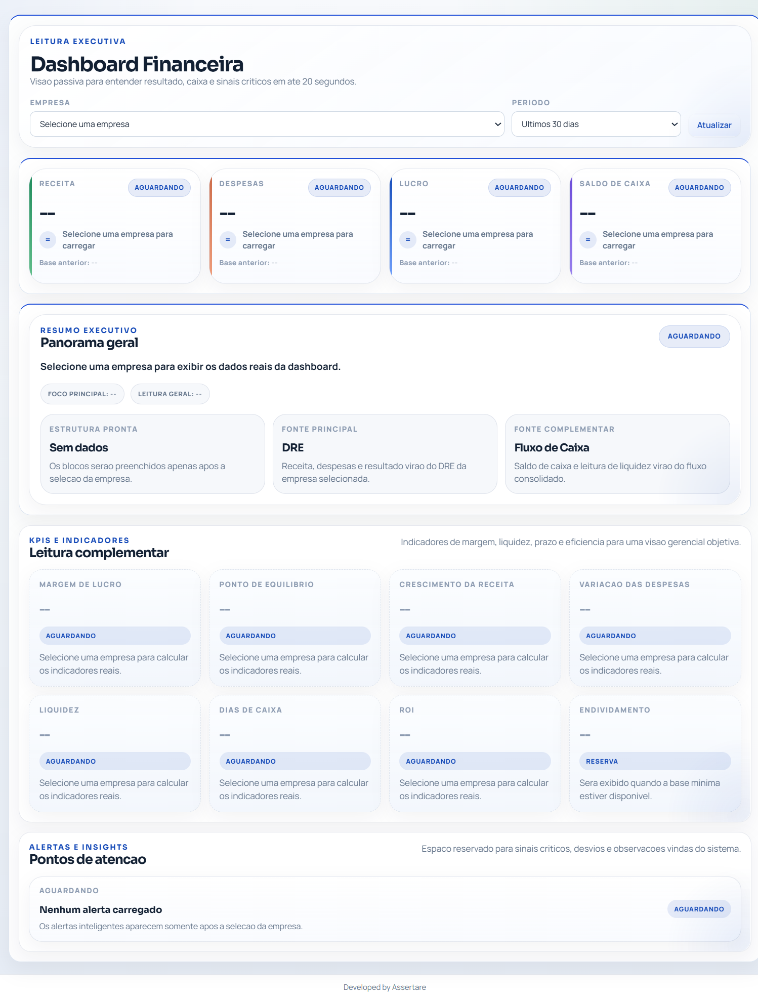
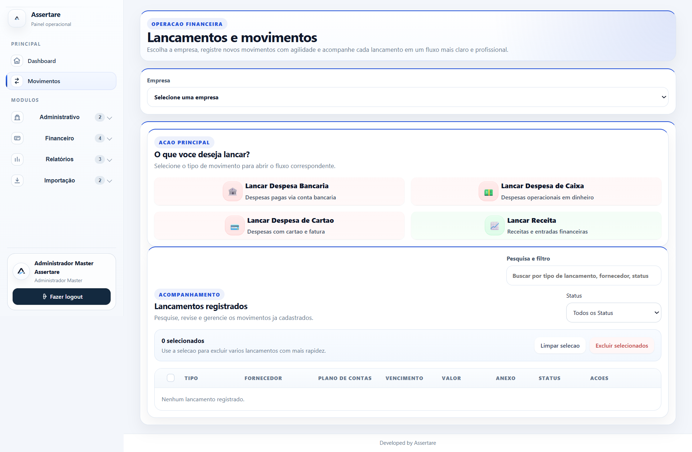
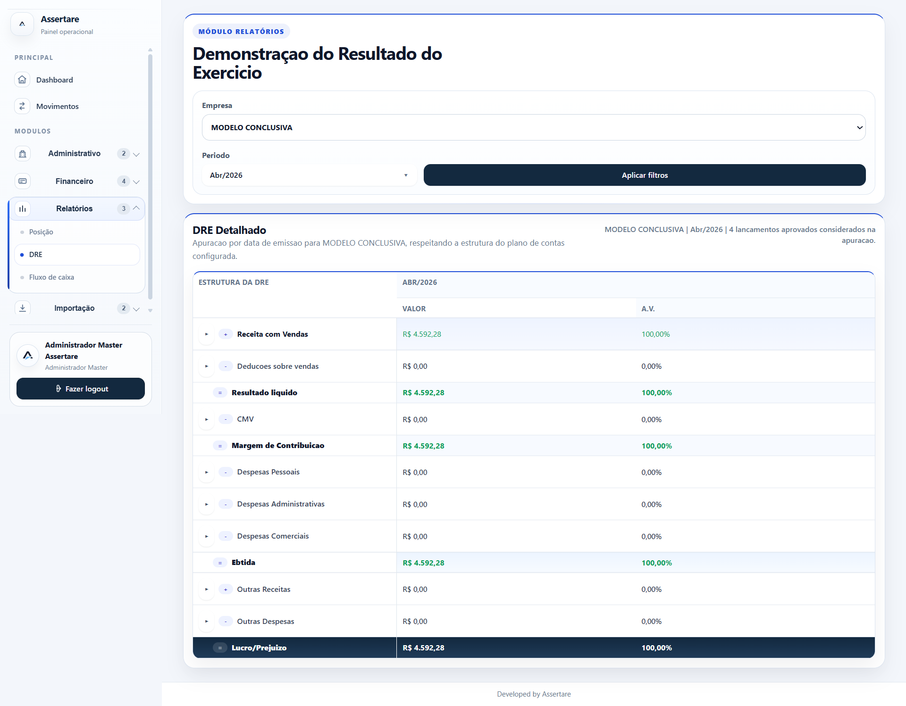

dos restaurantes não têm controle financeiro
Se você não controla os números, seu restaurante está controlando você.
Organize seu financeiro, entenda seus números e volte a ter controle do seu restaurante.
Sem controle financeiro, o prejuízo aparece nos números
do faturamento pode ser perdido sem gestão estruturada
decisões melhores vêm de números claros
deveria ser o tempo perdido tentando organizar o financeiro sozinho
Por que a gestão financeira é decisiva para o seu restaurante?
A falta de controle financeiro é um dos principais motivos que levam restaurantes a terem dificuldades, mesmo com boa venda.
Sem uma gestão estruturada, é comum não saber exatamente quanto se ganha, onde está o dinheiro e quais custos estão consumindo o resultado.
Ao terceirizar a gestão financeira, você passa a ter organização, clareza e acompanhamento profissional, sem precisar assumir essa responsabilidade no dia a dia da operação.
Nós estruturamos e executamos toda a rotina financeira, permitindo que você foque no crescimento do restaurante enquanto toma decisões com base em números reais.
Rotina Financeira
Organização das entradas, saídas e controles financeiros com padrão profissional.
Fluxo de Caixa
Visão clara do caixa para acompanhar a operação e tomar decisões com mais segurança.
Relatórios Gerenciais
DRE, indicadores e análises para entender o desempenho do restaurante.
Sistema de Gestão Financeira
Utilizamos um sistema exclusivo para organizar, acompanhar e apresentar os números do seu restaurante de forma simples, clara e profissional.

Dashboard Financeiro
Tenha uma leitura rápida do resultado, caixa, despesas e lucro em um único painel, com informações claras para decisões imediatas.

Movimentos Financeiros
Registre e acompanhe todas as movimentações financeiras de forma simples e organizada, sem perder informações importantes.

DRE Financeiro
Acompanhe receitas, despesas e resultado de forma estruturada, entendendo exatamente onde está o lucro do seu negócio.

Fluxo de Caixa
Tenha clareza sobre o dinheiro disponível, entradas e saídas futuras para planejar com segurança e evitar surpresas.
O que entregamos
A gestão financeira da Assertare foi desenhada para dar estrutura, acompanhamento e clareza sobre os números do restaurante.
Organização financeira completa
Estruturação da rotina para controle financeiro consistente desde o início.
Controle de entradas e saídas
Lançamento e acompanhamento das movimentações financeiras do restaurante.
Fluxo de caixa
Controle do caixa para dar previsibilidade e apoiar decisões operacionais.
DRE gerencial
Relatório para acompanhar resultado, margens e saúde financeira da operação.
Sistema Gestão Assertare
Sistema próprio para reduzir custos e oferecer relatórios mais claros ao cliente.
Acompanhamento contínuo
Suporte, alinhamentos e revisões periódicas para manter a gestão em evolução.
Como funciona o processo
Nosso processo é simples, organizado e pensado para o restaurante começar com o pé direito.
1
Contrato
Enviamos o contrato formalizando tudo o que foi alinhado sobre o serviço, responsabilidades e etapas.
2
Assinatura e pagamento
Com a assinatura e a confirmação do pagamento, damos início à implementação.
3
Implementação
Em até 7 dias, criamos a base do restaurante no sistema, organizamos a estrutura inicial, validamos os acessos bancários e realizamos o treinamento.
4
Início da gestão
Depois da implementação, iniciamos o acompanhamento com receitas e despesas sendo incluídas no sistema e acompanhadas continuamente.
Orientações importantes para começar certo
Para restaurantes em fase inicial, alguns cuidados fazem toda a diferença para evitar desorganização futura.
Estrutura inicial recomendada
- Ter uma conta bancária exclusiva para o CNPJ
- Separar totalmente as contas pessoais das contas da empresa
- Definir um pró-labore para o sócio ou proprietário
Controles desde o primeiro dia
- Registrar todas as entradas e saídas
- Acompanhar custos e despesas da operação
- Criar uma rotina financeira com processo claro
Começar com a estrutura correta reduz erros e dá mais segurança
para crescer.
Solicitar orientação inicial
Resultados esperados nos primeiros meses
Caixa mais organizado
Mais controle sobre entradas, saídas e previsibilidade financeira no dia a dia.
Mais clareza sobre os números
Entendimento mais prático sobre receitas, custos, despesas e resultado do restaurante.
Gestão com base em dados
Decisões mais seguras com apoio de rotina, relatórios e acompanhamento contínuo.
“Quando a rotina financeira começa organizada, o restaurante ganha mais clareza, controle e confiança para crescer.”
— Gestão financeira estruturada pela AssertarePronto para começar a gestão financeira do seu restaurante com organização?
Fale com a Assertare e entenda como podemos estruturar o financeiro do seu restaurante desde o início.